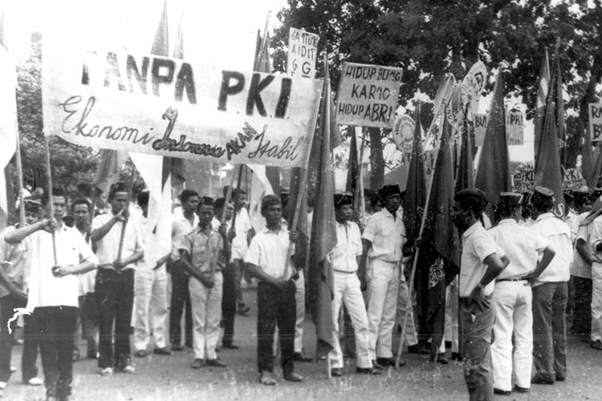

Pengertian
Demokrasi terpimpin adalah sebuah sistem politik yang pertama kali diperkenalkan di Indonesia pada era pemerintahan Presiden Soekarno. Konsep demokrasi terpimpin didasarkan pada 5 nilai yang ada (Pancasila) yang merupakan dasar negara Indonesia. Pada masa ini Pancasila sedang berusaha dibangun dan ditanamkan sebagai keyakinan dan kepribadian bangsa Indonesia.
Pada saat itu, kekuasaan politik terpusat pada 1 pemimpin, presiden Soekarno. Hal ini diperkuat dengan mundurnya Hatta dari posisi wakil presiden sejak 1956 sehingga semakin besarlah kekuasaan / dampak yang dipegang Soekarno. Masa Demokrasi Terpimpin berlangsung sejak dikeluarkannya Dekrit Presiden 5 Juli 1959 sampai 1965.
Demokrasi terpimpin mengklaim menggabungkan nilai-nilai demokrasi dengan nilai-nilai sosialisme. Namun dalam prakteknya, demokrasi terpimpin memberikan kekuasaan yang signifikan kepada pemimpin dan partai politik yang dominan, dengan tujuan mencapai tujuan sosial dan ekonomi yang dianggap penting bagi masyarakat, namun membuka kesempatan untuk banyak penyimpangan kekuasaan yang terjadi.
|
Penerapan Sistem Demokrasi
1. Mengaburnya Sistem Kepartaian
Keberadaan partai-partai politik kala itu bertujuan untuk mempersiapkan diri dalam rangka mengisi jabatan politik, tapi juga menjadi kekuatan penopang dari tiga kekuatan yang mendominasi kala itu yaitu lembaga kepresidenan, Angkatan Darat, dan Partai Komunis Indonesia (PKI).
2. Pembentukan Dewan Perwakilan Rakyat (DPR) Gotong Royong
Pembentukan lembaga legislatif dalam sistem politik nasional berubah menjadi lemah. DPR Gotong Royong dijadikan instrumen politik lembaga kepresidenan, namun proses rekrutmen ditentukan sendiri oleh Presiden Soekarno.
3. Sangat Lemahnya Penegakkan Hak Dasar Manusia dan Dominasi Kekuatan Presiden
Presiden kala itu memegang kekuasaan amat besar dan dapat menyingkirkan lawan-lawan politik yang berbeda pandangan dengan Presiden, lawan politik presiden Soekarno ditahan atau dipenjara karena menunjukkan pertentangan dengan beliau (Yang kebanyakan berasal dari kalangan sosialis dan kalangan tokoh Islam di Indonesia. Misalnya: Buya Hamka, Tan Malaka, dan Sutan Syahrir.)
→ Pada tahun 1960 Presiden Soekarno membubarkan DPR hasil pemilihan umum dan menggantinya dengan DPR Gotong Royong (DPR GR) yang anggotanya diangkat dan diberhentikan oleh presiden.
4. Dikekangnya Kebebasan Pers
Pada masa demokrasi terpimpin, pers mengalami banyak pengekangan dan dan pembatasan. Beberapa surat kabar dan majalah diberangus pemerintah, seperti Harian Abadi milik Masyumi dan Harian Pedoman dari PSI.
5. Pembatasan Otonomi Daerah
Kekuasaan terlalu sentralistik terhadap pemerintah pusat sehingga menyebabkan adanya dominasi yang makin kentara dan kesenjangan dalam hubungan antara pemerintah pusat dan pemerintah daerah. Otonomi daerah-daerah juga menjadi lebih terbatas dan dikontrol ketat oleh pusat.
|
|
Sejarah & Peristiwa Penting
1. Mengembalikan konstitusi ke UUD 1945 dan Dekrit Presiden 1955, Pembubaran Konstituante
Konstituante 19555 dibentuk untuk merumuskan UU baru. Persidangan pada 1956 hingga 1959 tidak membuahkan hasil, kondisi Indonesia memburuk dan kacau. Banyak muncul pemberontakan di daerah-daerah dimana mereka tidak mengakui keberadaan pemerintahan pusat dan membuat sistem pemerintahan sendiri.
Pada 22 April 1959 diadakan sidang lengkap Konstituante di Bandung. Pada sidang tersebut Presiden Soekarno mengusulkan untuk kembali ke UUD 1945. Dalam pidatonya, Soekarno mengkritik cara kerja Konstituante dan meminta supaya usul pemerintah disetujui dengan segera. Usulan Presiden Soekarno untuk kembali ke UUD 1945 terjadi pro dan kontra, ada yang mendukung dan menolak. Dua partai besar, PNI dan PKI menerima usul rencana pemerintah tentang UUD 1945, sedangkan Masyumi menolak (mereka khawatir akan akibat-akibat pelaksanaan Demokrasi Terpimpin dengan pelaksanaan UUD 1945). Dalam sidang Konstituante telah beberapa kali dilakukan pemungutan suara dan tetap tidak berhasil memecahkan usul pemerintah tersebut.
Akhirnya pada 5 Juli 1959, di Istana Merdeka, Presiden Soekarno mengeluarkan Dekrit Presiden yang berisikan salah satunya Indonesia kembali ke UUD 1945 dan Konstituante dibubarkan.
2. Pembentukan DPR-GR
Penggabungan sistem kepartaian dengan terbentuknya DPR-GR. peranan lembaga legislatif dalam sistem politik nasional menjadi lemah, begitu pula dengan hak asasi manusia. Demokrasi Terpimpin adalah masa puncak dari semangat anti-kebebasan pers, dan sentralisasi kekuasaan makin dominan dalam hubungan antara pemerintah pusat dengan daerah.
3. Politik Mercusuar
Politik ini erat kaitannya dengan cita-cita Presiden Soekarno yang ingin memajukan Indonesia. Politik Mercusuar merupakan kebijakan politik luar negeri yang dilaksanakan oleh Presiden Soekarno pada masa demokrasi terpimpin, dimana tujuan pelaksanaannya dengan mengagungkan nama Indonesia di forum internasional. Dalam menjalankan politik ini, Soekarno membangun banyak sekali ikon-ikon seperti Gelora Bung Karno, Monas, Jakarta bypass, Jembatan Ampera hingga menggelar pesta olahraga besar-besaran GANEFO (Games of New Emerging Forces) yang membuat kerugian besar dalam bidang ekonomi.
4. Dimanfaatkan sebagai senjata politis dan ideologis. Hubungan PKI dengan Soekarno, dan pemberontakan antara Presiden Soekarno, militer, partai komunis, dan kelompok Islam.
Hubungan PKI dan Soekarno pada masa Demokrasi Terpimpin merupakan hubungan timbal balik. PKI memanfaatkan popularitas Soekarno untuk mendapat massa.
Mei 1963, MPRS mengangkat Soekarno menjadi presiden seumur hidup. Keputusan ini didukung oleh PKI. TNI-Angkatan Darat curiga melihat perkembangan PKI dan Soekarno , terlebih saat angkatan lain, seperti TNI-Angkatan Udara, mendapatkan dukungan Soekarno. Hal ini dianggap sebagai upaya menyaingi kekuatan Angkatan Darat dan usaha memecah belah militer.
Keretakan hubungan Soekarno dengan pemimpin militer akhirnya muncul. Keadaan ini dimanfaatkan PKI untuk mencapai tujuan politiknya. Sikap militan radikal dari agitasi dan tekanan politik oleh PKI memperdalam permusuhan diantara 2 pihak tersebut.
Pembubaran DPR hasil pemilu 1955 oleh presiden. DPR diangkat oleh presiden (seharusnya melalui pemilihan umum)
Konflik memuncak pada pertengahan bulan September 1965. Partai politik pada masa Demokrasi Terpimpin mengalami pembubaran paksa. Pembubaran ini dilakukan lewat Penetapan Presiden (Penpres) yang dikeluarkan pada 31 Desember 1959. Sampai 1961, hanya ada 10 partai yang diakui dan dianggap memenuhi prasyarat di atas.
Dapat disimpulkan, kehidupan partai politik di masa Demokrasi Terpimpin sangat terkekang dan hampir tidak bisa memainkan perannya dalam pentas perpolitikan nasional kala itu. Hal ini mungkin disebabkan oleh peran Soekarno yang amat dominan dalam menjalankan pemerintahannya yang sangat otoriter saat Demokrasi Terpimpin.
5. Pencampuran Nasakom.
Pada Februari 1956, Soekarno mengusulkan konsep Nasakom (Nasionalis Agamis dan Komunis) sebagai pilar pilar politik utama Demokrasi Terpimpin. Terlebih, di Pemilu 1955, partai-partai politik yang mewakili tiga ideologi besar itu menjadi pemenangnya, yakni PNI, Masyumi dan Nahdlatul Ulama (NU), serta PKI. Tiga ideologi utama partai politik yang saling bertentangan berusaha dipersatukan demi kemajuan pembangunan Indonesia. Sesungguhnya konsep Nasakom juga kurang tepat karena mengangkat komunisme dan tidak sesuai dengan Pancasila .
Namun situasi ini dimanfaatkan oleh PKI untuk mendapatkan posisi dalam pemerintahan. PKI paham benar mencari-cari celah politik dari Demokrasi Terpimpin melalui sosok Soekarno. Pada awal 1960an Indonesia bergerak menuju radikalisme yang menguntungkan PKI untuk semakin berkembang, sebelum akhirnya pihak tentara mengambil tindakan dengan membatasi PKI pada akhir 1960.
6. Gerakan 30S PKI (Gerakan 30 September)
G30S PKI terjadi pada tahun 1965 dan dimotori oleh Dipa Nusantara Aidit atau DN Aidit, pemimpin terakhir PKI, Sementara itu, G30S PKI di Yogyakarta dipimpin oleh Mayor Mulyono.
Tujuan :
1. Menghancurkan Negara Kesatuan Republik Indonesia (NKRI) dan menjadikannya sebagai negara komunis.
2. Menyingkirkan TNI Angkatan Darat dan merebut kekuasaan pemerintahan.
3. Mewujudkan cita-cita PKI, yakni menjadikan ideologi komunis dalam membentuk sistem pemerintahan yang digunakan sebagai alat untuk mewujudkan masyarakat komunis.
4. Mengganti ideologi Pancasila menjadi ideologi komunis.
5. Kudeta yang dilakukan kepada Presiden Soekarno tak lepas dari rangkaian kegiatan komunisme internasional.
Kronologi :
Penyebarluasan ideologi komunis oleh PKI menimbulkan kecurigaan dari kelompok anti-komunis, juga memperburuk persaingan antara elit politik nasional. Desas-desus bermunculan di masyarakat, terlebih menyangkut kesehatan Presiden Soekarno dan Dewan Jenderal Angkatan Darat.
Di tengah kecurigaan tersebut, Letnan Kolonel Untung (komandan G30S), Komandan Batalyon I Kawal Resimen Cakrabirawa , yakni pasukan khusus pengawal Presiden, memimpin sekelompok pasukan dalam melakukan aksi bersenjata di Jakarta. Pasukan tersebut bergerak meninggalkan daerah Lubang Buaya. Peristiwa ini terjadi pada tengah malam, pergantian hari Kamis, 30 September 1956 menuju hari Jumat, 1 Oktober 1965.
Kudeta yang sebelumnya dinamakan Operasi Takari diubah menjadi gerakan 30 September. Mereka menculik dan membunuh para perwira tinggi Angkatan Darat. Enam orang perwira tinggi Angkatan Darat dan 1 jenderal berhasil diculik, dan banyak memakan korban pahlawan revolusi, terutama dari pihak Angkatan Darat.
|



|